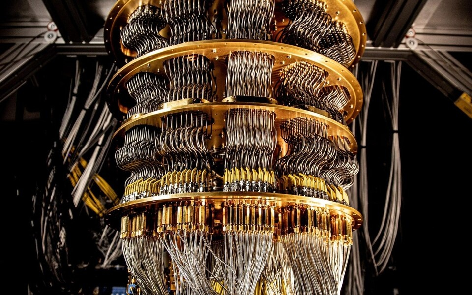
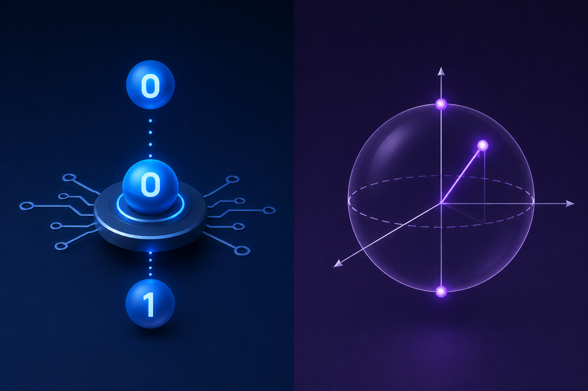
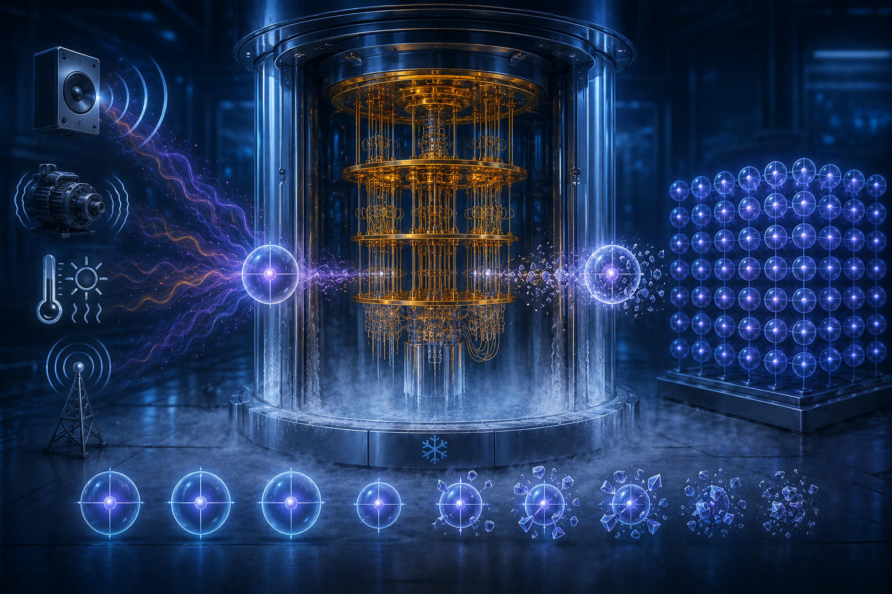
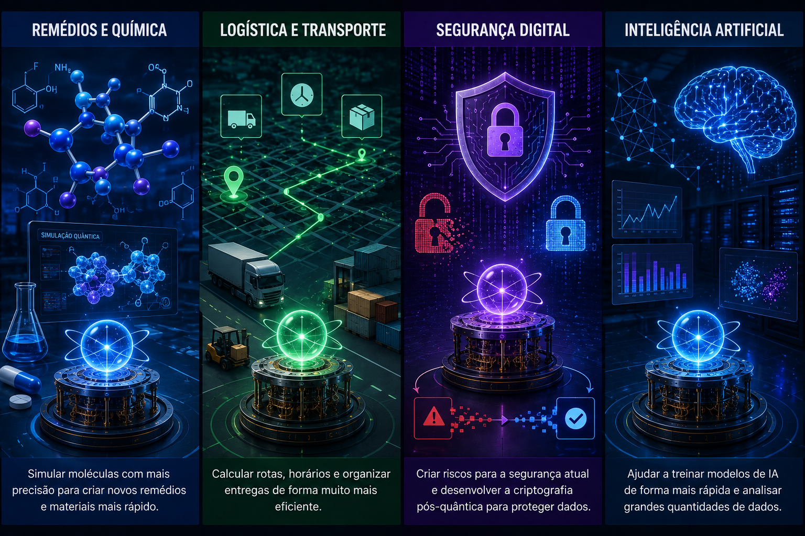

1. O que é computação quântica?
A computação quântica é um jeito diferente de fazer os computadores calcularem.
Em vez de usar só as regras da física que enxergamos no nosso dia a dia, ela usa
regras da física quântica, que é a parte da física que estuda o comportamento de
partículas muito pequenas, como elétrons e fótons [4]. Nessa
escala tão pequena, a matéria se comporta de um jeito bem diferente do que estamos
acostumados a ver no mundo grande, macroscópico.
É importante entender que a computação quântica não veio para substituir o computador comum no dia a dia. Ela não vai deixar seu celular ou seu computador de casa mais rápido para jogar ou navegar na internet. Ela serve para resolver alguns tipos de problema específicos, que são muito difíceis — ou quase impossíveis de calcular com a tecnologia atual, como simular o comportamento de moléculas complexas ou testar um número gigantesco de possibilidades ao mesmo tempo [5].

2. Bit e qubit
No computador comum, a menor unidade de informação é o bit. Um bit só pode assumir dois valores: 0 ou 1. É como um interruptor de luz, que só pode estar ligado ou desligado nunca os dois ao mesmo tempo. Todo o processamento de um computador comum, do jogo mais simples ao aplicativo mais complexo, é feito combinando sequências enormes desses zeros e uns.
No computador quântico, a unidade de informação é o qubit Ele também pode ser chamado de bit quântico. Diferente do bit comum, o qubit pode representar 0 ou 1. Além disso, ele pode estar em uma combinação dos dois estados. Esse fenômeno é chamado de superposição Isso permite que computadores quânticos realizem cálculos de uma forma diferente. [2].

Uma forma simples de imaginar isso é pensar em uma moeda. O bit é como uma moeda parada em cima da mesa, mostrando claramente cara ou coroa. Já o qubit é como essa mesma moeda ainda girando no ar: enquanto ela está girando, não dá para dizer se é cara ou coroa ela está, de certa forma, nos dois estados ao mesmo tempo, até o momento em que alguém a observa (ou seja, até o momento em que é medida) [7].
3. Superposição e emaranhamento
A superposição é o que permite o qubit estar em mais de um estado ao mesmo tempo [1]. Isso pode parecer estranho, mas é justamente isso que dá à computação quântica seu grande poder: quando se juntam vários qubits em superposição, é possível representar muitas combinações diferentes ao mesmo tempo, e não só uma de cada vez, como aconteceria em um computador comum. Por exemplo, dois qubits em superposição conseguem representar, ao mesmo tempo, as quatro combinações possíveis de 0 e 1 (00, 01, 10 e 11) [4].
Outra ideia muito importante é o emaranhamento quântico. Quando dois qubits ficam emaranhados, o estado de um deles passa a estar ligado ao estado do outro, de um jeito que, ao medir um dos qubits, é possível saber instantaneamente algo sobre o outro mesmo que eles estejam fisicamente separados, em lugares diferentes [7].

É a junção entre superposição e emaranhamento que faz os computadores quânticos conseguirem, em teoria, testar muitas soluções diferentes de um problema ao mesmo tempo, em vez de testar uma solução por vez, como faz um computador comum [2].
4. Por que é tão difícil de fazer?
Manter os qubits em superposição é uma tarefa bem complicada. Qualquer barulho, vibração, variação de temperatura ou até uma pequena interferência do ambiente pode fazer o qubit perder essa característica quântica. Esse fenômeno se chama decoerência. É por isso que os computadores quânticos ficam dentro de máquinas muito geladas, resfriadas a temperaturas próximas da mais baixa que existe no universo [1].
Além da decoerência, existe o problema dos erros. Como os qubits são muito sensíveis a qualquer interferência, os cálculos feitos por um computador quântico ainda têm bastante chance de erro. Por isso, cientistas trabalham em técnicas de correção de erros quânticos, tentando tornar os resultados mais confiáveis.
Outro ponto é a escala. Para fazer coisas realmente avançadas, como quebrar um tipo de segurança digital muito usado hoje, chamado criptografia RSA de 2048 bits, seria preciso um computador quântico com algo em torno de 20 milhões de qubits estáveis um número muito maior do que existe atualmente em qualquer computador quântico do mundo [6].
5. Para que a computação quântica pode servir?
Mesmo ainda em desenvolvimento, já existem várias áreas em que a computação quântica pode fazer diferença no futuro:
- Remédios e química: simular o comportamento de moléculas de forma muito mais precisa, ajudando a criar novos remédios e materiais mais rápido [6].
- Logística e transporte: calcular rotas, horários e formas de organizar entregas de um jeito mais eficiente, algo bem útil para empresas grandes [11].
- Segurança digital: tanto criar riscos para a segurança que usamos hoje quanto ajudar a criar uma nova forma de proteção, chamada criptografia pós-quântica, feita justamente para resistir a ataques de computadores quânticos [10].
- Inteligência artificial: ajudar a treinar modelos de IA de forma mais rápida e analisar grandes quantidades de dados [9].

6. Como está isso hoje em dia
Hoje, não é preciso ter um computador quântico próprio para poder usar um. Empresas como IBM, Google, Microsoft e Amazon já oferecem acesso a processadores quânticos pela internet, em um modelo parecido com o que já conhecemos da computação em nuvem [8].
A IBM, por exemplo, tem lançado processadores quânticos cada vez mais avançados, tentando tornar essa tecnologia mais estável e com menos erros, buscando o que os cientistas chamam de "tolerância a falhas" [9]. Ao mesmo tempo, cresce a preocupação com dados sigilosos guardados hoje sendo decifrados no futuro, quando computadores quânticos suficientemente poderosos existirem — isso tem levado empresas e governos a estudar a criptografia pós-quântica com mais atenção [8].
7. Conclusão
A computação quântica ainda está em uma fase de desenvolvimento, mas já deixou de ser apenas uma ideia de livro de física para se tornar um assunto de investimento real por parte de grandes empresas e governos ao redor do mundo. Ela ainda tem desafios grandes para resolver, como manter os qubits estáveis por tempo suficiente e diminuir os erros nos cálculos.
Mesmo assim, o potencial dessa tecnologia é enorme: da criação de novos remédios até uma segurança digital mais forte, passando pela inteligência artificial. Entender os conceitos básicos desse assunto, como o qubit, a superposição e o emaranhamento, é um bom primeiro passo para acompanhar as mudanças que essa tecnologia deve trazer nas próximas décadas.